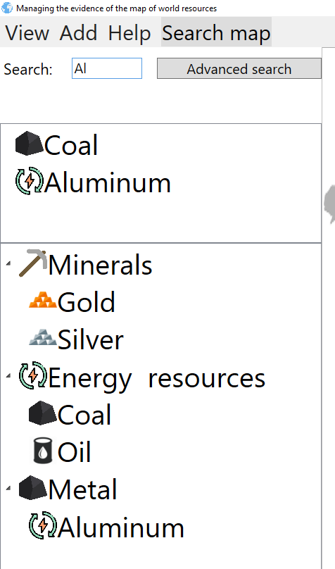
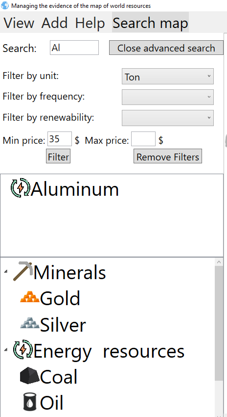

Searching tree view
In order to search resources presented on tree view you need to use search field, or open advanced search box with clicking on btn Advanced search


That action will show results if you just type in name (basic search field), or after you press Filter btn (advanced search fields)